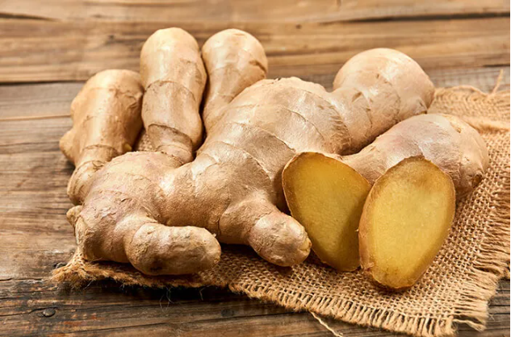

Tanaman Jahe (Zingiber officinale)

Jenis:
Rempah dan Tanaman Obat
Manfaat:
- Menghangatkan tubuh
- Mengobati masuk angin
- Bumbu masakan tradisional
Cara Menanam:
Gunakan rimpang tua, tanam di tanah gembur dan lembap. Simpan di tempat teduh, siram teratur.